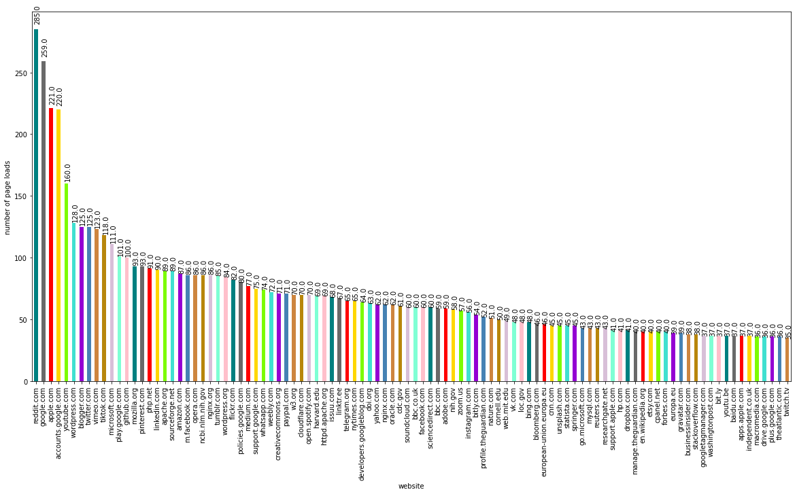
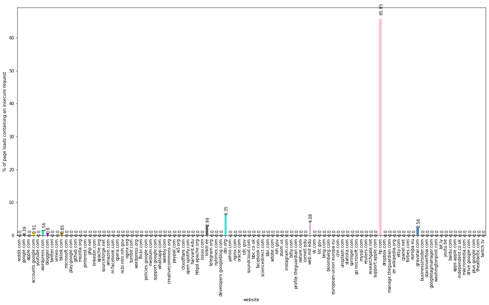
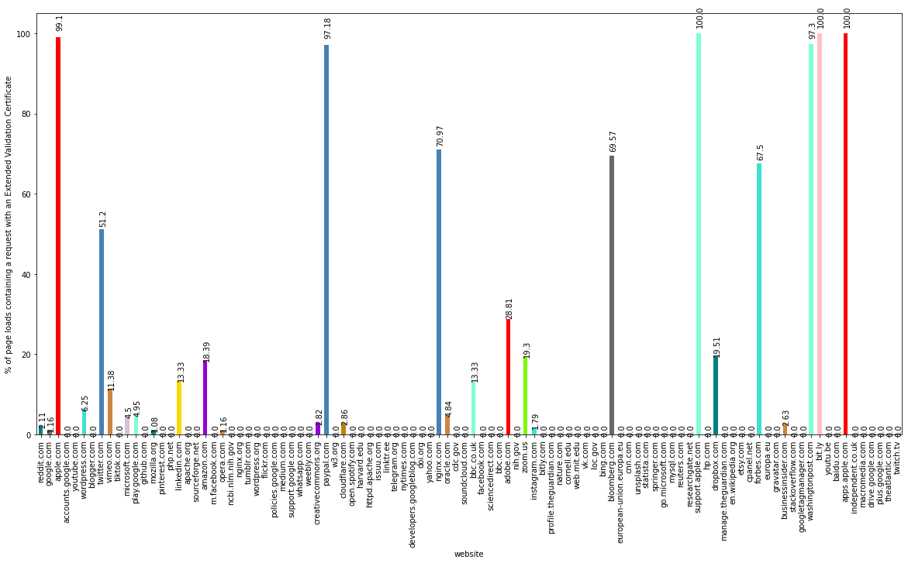
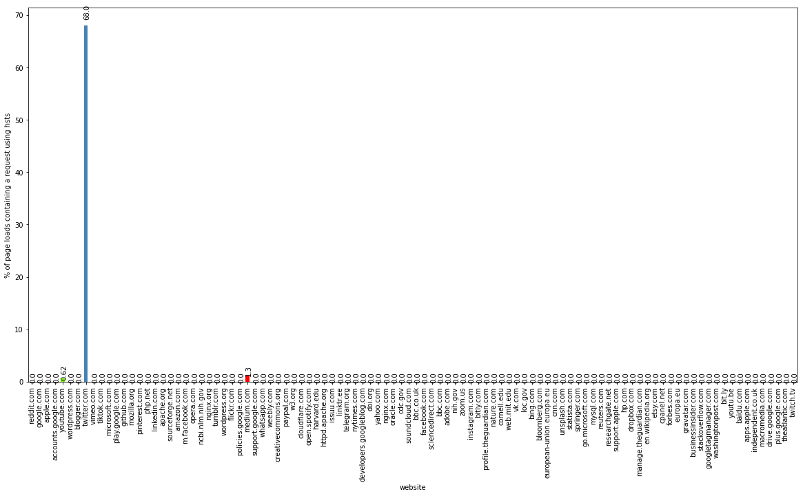
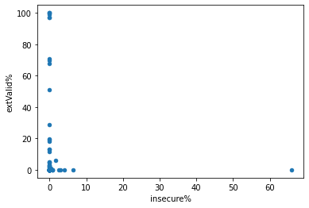
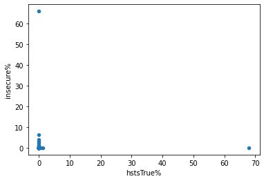
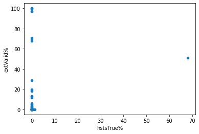

Analysis of Data from Firefox Web Security Plugin
Group: John Bridgers (Worked alone)The goal of this project is to collect and analyze data from a Firefox plugin relating to web security that I desgined with a group of students (Jiahua Liu, Uyen P. Nguyen) for a project in CMSC396H (Research seminar) (Since I am working on this project (CMSC320 final), I will only discuss my contributions, and this data analysis has been done by myself). The goal of the plugin is to use features from the Firefox getSecurityInfo API to collect data on a page load by page load basis regarding security leaks that may take place at the very beginning of a web connection. These leaks may take place when the browser sends DNS requests, performs TLS handshakes, or looks up TLS certifiate information.
All of the code for the plugin and the web scraper/crawler (which will be discussed in the next section) are on our github: https://github.com/john-db/cmsc396h_RG.
Data collection/curation + parsing (if necessary)
The first step in any data analysis project is of course to gather the data. In this case, we will be creating our own dataset, and the first step is to create the Firefox plugin.
We don't need to discuss the entire plugin here, only the parts relevant for data collection. The goal of the plugin was to collect security info on a page load by page load basis. The getSecurityInfo api only returns information for individual http requests, of which a webpage may contain hundreds. So the challenge was to find a way to associate these web requests with web page loads. To do this, I looked at uBlockOrigin, an open source content blocking plugin, so see how they associate requests with pages. They use what they call a tabContextManager to keep track of what pages current tabs have loaded, and then associate requests in these tabs to these pages.
So in our plugin, we used the webNavigation API to keep track of which pages each tab had navigated to, and used the webRequest API to associate requests to these pages.
The end goal of this project is to create a plugin that can be distributed to users so that we can collect real browsing data, but for we haven't implemented abilities for the plugin to store data on a server yet, currently the data is stored in Firefox's local storage instead. The plugin can output this data to a .csv file.
Now, since the plugin cannot be distributed to users yet, in order to get data I would have to do it myself. But it would take far too long for me to manually visit enought websites to have an interesting dataset, so I created a web crawler/scraper that visits sites for me. This web crawler was created using the Selenium API for python. Since this was a key part of data collection I will go over the code, but it will all be commented out because it is python, and I don't want the ipynb to run it.
First we import the necessary packages, and read in data from a .csv obatained from https://majestic.com/reports/majestic-million containing the million most popular websites, the csv file used is the first 1000 rows because the full file was too large.
# from selenium import webdriver
# from selenium.webdriver.common.by import By
# from selenium.webdriver.firefox.options import Options
# import pandas as pd
# import time
# import os
# scraper_folder = os.path.dirname(__file__)
# project_folder = os.path.dirname(scraper_folder)
# sites = pd.read_csv(scraper_folder + "/majestic_thousand.csv")
# sites["Domain"] = sites["Domain"].astype("string")
# websites = sites["Domain"].apply(lambda x: "https://" + x)Then we configure the options for our Firefox webdriver. We set the dom.popup_maximum preference to 0 to prevent popups from interfering with our crawler.
# options=Options()
# options.set_preference("dom.popup_maximum", 0)Then we create our web driver and install the firefox plugin located in folder "v1" We set the set_page_load_timeout to 10 because without this, the driver would get stuck/hang on certain sites it tried to visit, for example if it tried to visit a hyperlink which was an email it would hang, so this timeout just ensures that if a get request takes more than 10 seconds, the driver will move on.
# driver = webdriver.Firefox(options=options)
# addon_path = project_folder + "/v1"
# driver.install_addon(path=addon_path, temporary=True)
# driver.set_page_load_timeout(10)Now we get to the part which actually crawls the web. The outer for loop goes through the 200 most popular domains, and tries to visit them. The time.sleep call pauses program execution, which is very important, because the requests need time to complete, as our plugin can only call getSecurityInfo when the http headers have been received. After the time.sleep, the driver scrapes the current page for hyperlinks (by looking for a[@href] XPath). There are other ways to do this, for example, one could have first scraped all the domains for links using Beautiful Soup or Requests packages, but I favored this way because it took less pre-processing. Then for each of those hyperlinks, the driver tries to visit it, and after visiting all the hyperlinks, it proceeds to the next domain.
# i = 0
# j = 0
# for link in websites[0:200]:
# i += 1
# print("outer link: " + str(i))
# try:
# driver.get(link)
# j += 1
# print("get #" + str(j) + " was " + link)
# time.sleep(7)
# elems = driver.find_elements(By.XPATH, '//a[@href]')
# hrefs = []
# for elem in elems:
# hrefs.append(elem.get_attribute("href"))
# for my_link in hrefs[0:10]:
# try:
# driver.get(my_link)
# j += 1
# print("get #" + str(j) + " was " + my_link)
# time.sleep(7)
# except Exception as e:
# print("error on " + my_link)
# except Exception as e:
# print("error on " + link)The plugin requires data to be manually exported csv from Firefox, so we must add a while True loop after the driver finishes so that the Firefox instance isn't garbage collected. This way Firefox will remain open after the program completes, so that we may extract the data.
# while True:
# print("DONE")
# time.sleep(30)So that concludes our web crawler. The web crawler was run 9 times on my laptop (MacOS, Firefox 107.0.1, UMD IOT Wi-Fi connection) and 3 times on my PC (Windows 10, Firefox 107.0.1, UMD IOT Wired connection).
We will now read in the data so it may be analyzed:
We will be using the pandas package for data manipulation
import pandas as pdWe will read in our 12 csv files, and combine them into one dataframe using pandas.concat
df1 = pd.read_csv("/content/macosmajesticthousand200_1.csv")
df2 = pd.read_csv("/content/macosmajesticthousand200_2.csv")
df3 = pd.read_csv("/content/macosmajesticthousand200_3.csv")
df4 = pd.read_csv("/content/macosmajesticthousand200_4.csv")
df5 = pd.read_csv("/content/macosmajesticthousand200_5.csv")
df6 = pd.read_csv("/content/macosmajesticthousand200_6.csv")
df7 = pd.read_csv("/content/macosmajesticthousand200_7.csv")
df8 = pd.read_csv("/content/macosmajesticthousand200_8.csv")
df9 = pd.read_csv("/content/macosmajesticthousand200_9.csv")
df10 = pd.read_csv("/content/windows10majesticthousand200_1.csv")
df11 = pd.read_csv("/content/windows10majesticthousand200_2.csv")
df12 = pd.read_csv("/content/windows10majesticthousand200_3.csv")
df = df = pd.concat([df1,df2,df3,df4,df5,df6,df7,df8,df9,df10,df11,df12])
df = df.fillna(int(0), downcast='infer')
df.shape(10613, 26)We can see that we have 10,613 rows (page loads) and 26 columns.
df.columnsIndex(['tabId', 'hostname', 'countRequests', 'timeStamp', 'countSecure',
'countInsecure', 'countBroken', 'countWeak', 'countHpkpTrue',
'countHpkpFalse', 'countHstsTrue', 'countHstsFalse',
'countIsExtendedValidationTrue', 'countIsExtendedValidationFalse',
'countIsTRRTrue', 'countIsTRRFalse', 'countIsNotValidTrue',
'countIsNotValidFalse', 'countCTSNotApplicable',
'countCTSPolicyCompliant', 'countCTSPolicyNotEnoughSCTS',
'countCTSPolicyNotDiverseSCTS', 'countIsDomainMismatchTrue',
'countIsDomainMismatchFalse', 'countIsUntrustedTrue',
'countIsUntrustedFalse'],
dtype='object')There are many columns, so I will talk about the relevant ones when they are analyzed, but here's a summary of the important columns: the hostname column contains the hostname of a web page, the contains the number of requests associated with the page load, and the columns are a count of how many webrequests from that page had a certain property be true/false.
Here are the columns that we have to work with
df.columnsIndex(['tabId', 'hostname', 'countRequests', 'timeStamp', 'countSecure',
'countInsecure', 'countBroken', 'countWeak', 'countHpkpTrue',
'countHpkpFalse', 'countHstsTrue', 'countHstsFalse',
'countIsExtendedValidationTrue', 'countIsExtendedValidationFalse',
'countIsTRRTrue', 'countIsTRRFalse', 'countIsNotValidTrue',
'countIsNotValidFalse', 'countCTSNotApplicable',
'countCTSPolicyCompliant', 'countCTSPolicyNotEnoughSCTS',
'countCTSPolicyNotDiverseSCTS', 'countIsDomainMismatchTrue',
'countIsDomainMismatchFalse', 'countIsUntrustedTrue',
'countIsUntrustedFalse'],
dtype='object')First we will make sure the hostname column is all strings, and remove any 0's (our NaN's were filled with zeros, there were a few missing values for the hostname (happens when making a new tab))
df['hostname'] = df['hostname'].apply(lambda x: str(x))
df['hostname'] = df['hostname'].astype("string")
df = df[df['hostname'] != '0']df.shape(10567, 26)We now have 10,567 page loads after removing empty values.
Currently the columns of security info consist of counts of how many requests had each property, so we create new columns which serve as binary indicators of whether the page load had a certain property or not.
df['insecureIndicator'] = df['countInsecure'].apply(lambda x: 1 if x > 0 else 0)
df['isExtValidTrueIndicator'] = df['countIsExtendedValidationTrue'].apply(lambda x: 1 if x > 0 else 0)
df['TRRTrueIndicator'] = df['countIsTRRTrue'].apply(lambda x: 1 if x > 0 else 0)
df['hstsTrueIndicator'] = df['countHstsTrue'].apply(lambda x: 1 if x > 0 else 0)
df['hpkpTrueIndicator'] = df['countHpkpTrue'].apply(lambda x: 1 if x > 0 else 0)
df['hostname'].value_counts()reddit.com 285
google.com 259
apple.com 221
accounts.google.com 220
youtube.com 160
...
revoked-rsa-dv.ssl.com 1
calparents.berkeley.edu 1
coronavirus.berkeley.edu 1
burst.shopify.com 1
faq.dailymotion.com 1
Name: hostname, Length: 404, dtype: Int64Now we will make a new dataframe for analyzing each unique domain in our dataframe.
data = pd.DataFrame()
for site in df['hostname'].unique():
hostname = str(site)
data = data.append({'website': hostname,
'countPageLoads': len(df[df['hostname'] == hostname].index),
'countRequests': df[df['hostname'] == hostname]['countRequests'].sum(),
'insecure%': df[df['hostname'] == hostname]['insecureIndicator'].mean() * 100,
'extValid%': df[df['hostname'] == hostname]['isExtValidTrueIndicator'].mean() * 100,
'hstsTrue%': df[df['hostname'] == hostname]['hstsTrueIndicator'].mean() * 100,
'TRRTrue%': df[df['hostname'] == hostname]['TRRTrueIndicator'].mean() * 100,
'hpkpTrue%': df[df['hostname'] == hostname]['hpkpTrueIndicator'].mean() * 100},
ignore_index = True)We give this new dataframe columns representing: how many page loads there were for a certain domain (countPageLoads), how many requests each domain had (countRequests), and columns containing the percentage of page loads to a certain domain which had a 1 in our indicator columns. (For an indicator column, we can find the percentage by just taking the mean (and multiplying by 100 to get it in the expected percentage format))
Now let's sort our new dataframe by countPageLoads and take a look at which domains were most visisted by our crawler
data.sort_values(by="countPageLoads", ascending=False)
data.head(10)| website | countPageLoads | countRequests | insecure% | extValid% | hstsTrue% | TRRTrue% | hpkpTrue% | |
|---|---|---|---|---|---|---|---|---|
| 0 | google.com | 259.0 | 4618.0 | 0.386100 | 1.158301 | 0.0 | 66.023166 | 0.0 |
| 1 | about.google | 24.0 | 1092.0 | 4.166667 | 0.000000 | 0.0 | 41.666667 | 0.0 |
| 2 | store.google.com | 8.0 | 597.0 | 0.000000 | 0.000000 | 0.0 | 12.500000 | 0.0 |
| 3 | mail.google.com | 8.0 | 203.0 | 0.000000 | 0.000000 | 0.0 | 12.500000 | 0.0 |
| 4 | accounts.google.com | 220.0 | 4179.0 | 0.909091 | 0.000000 | 0.0 | 81.363636 | 0.0 |
| 5 | smallbusiness.withgoogle.com | 4.0 | 119.0 | 0.000000 | 0.000000 | 0.0 | 0.000000 | 0.0 |
| 6 | facebook.com | 60.0 | 988.0 | 0.000000 | 0.000000 | 0.0 | 45.000000 | 0.0 |
| 7 | es-la.facebook.com | 7.0 | 97.0 | 0.000000 | 0.000000 | 0.0 | 0.000000 | 0.0 |
| 8 | fr-fr.facebook.com | 7.0 | 126.0 | 0.000000 | 0.000000 | 0.0 | 0.000000 | 0.0 |
| 9 | zh-cn.facebook.com | 7.0 | 126.0 | 0.000000 | 0.000000 | 0.0 | 0.000000 | 0.0 |
Just from a quick glance, a couple of things stand out. Apple has a very high percentage of pages loaded with an Extended Validation certificate. Twitter is the only website for which the percentage of page loads using HTTP Strict Transport Security (hsts%) was nonzero. We can keep these in mind for when we do some more exploratory data analysis.
Now let's take a look at the domains which had the highest percentage of page loads with an insecure request.
data.sort_values(by="insecure%", ascending=False).head(10)| website | countPageLoads | countRequests | insecure% | extValid% | hstsTrue% | TRRTrue% | hpkpTrue% | |
|---|---|---|---|---|---|---|---|---|
| 392 | tieba.baidu.com | 2.0 | 161.0 | 100.0 | 0.0 | 0.0 | 100.0 | 0.0 |
| 372 | pingdom.com | 1.0 | 90.0 | 100.0 | 0.0 | 0.0 | 0.0 | 0.0 |
| 323 | give.berkeley.edu | 1.0 | 15.0 | 100.0 | 0.0 | 0.0 | 100.0 | 0.0 |
| 389 | news.baidu.com | 3.0 | 97.0 | 100.0 | 0.0 | 0.0 | 100.0 | 0.0 |
| 391 | map.baidu.com | 3.0 | 266.0 | 100.0 | 0.0 | 0.0 | 100.0 | 0.0 |
| 204 | springernature.com | 3.0 | 37.0 | 100.0 | 0.0 | 0.0 | 100.0 | 0.0 |
| 195 | parents.stanford.edu | 2.0 | 29.0 | 100.0 | 0.0 | 0.0 | 100.0 | 0.0 |
| 96 | employees.nih.gov | 7.0 | 77.0 | 100.0 | 0.0 | 0.0 | 100.0 | 0.0 |
| 399 | image.baidu.com | 1.0 | 35.0 | 100.0 | 0.0 | 0.0 | 100.0 | 0.0 |
| 340 | natgeopicturesoftheyearcontest.com | 1.0 | 7.0 | 100.0 | 0.0 | 0.0 | 100.0 | 0.0 |
A lot of these have only 1 page load, so the fact that they have 100% of their page loads having insecure requests isn't very meaningful, so let's filter this so we only see domains with at least a couple page loads.
data[data['countPageLoads'] >= 5].sort_values(by="insecure%", ascending=False).head(10)| website | countPageLoads | countRequests | insecure% | extValid% | hstsTrue% | TRRTrue% | hpkpTrue% | |
|---|---|---|---|---|---|---|---|---|
| 96 | employees.nih.gov | 7.0 | 77.0 | 100.000000 | 0.0 | 0.0 | 100.000000 | 0.0 |
| 351 | weibo.com | 19.0 | 553.0 | 89.473684 | 0.0 | 0.0 | 89.473684 | 0.0 |
| 113 | status.twitter.com | 7.0 | 142.0 | 85.714286 | 0.0 | 0.0 | 100.000000 | 0.0 |
| 89 | vaultpress.com | 7.0 | 170.0 | 71.428571 | 0.0 | 0.0 | 100.000000 | 0.0 |
| 175 | news.mit.edu | 7.0 | 93.0 | 71.428571 | 0.0 | 0.0 | 100.000000 | 0.0 |
| 229 | hp.com | 41.0 | 833.0 | 65.853659 | 0.0 | 0.0 | 80.487805 | 0.0 |
| 93 | automattic.com | 7.0 | 172.0 | 57.142857 | 0.0 | 0.0 | 100.000000 | 0.0 |
| 90 | akismet.com | 7.0 | 185.0 | 57.142857 | 0.0 | 0.0 | 100.000000 | 0.0 |
| 177 | wsj.com | 29.0 | 1427.0 | 31.034483 | 0.0 | 0.0 | 82.758621 | 0.0 |
| 52 | developers.google.com | 7.0 | 287.0 | 28.571429 | 0.0 | 0.0 | 100.000000 | 0.0 |
The standout here is hp.com, which has a good sample size (41 page loads) and a very high insecure%. We will also keep this in mind when we do further data analysis. Another one which catches my eye is weibo with 89% over 19 page loads. 19 is probably far too few to draw any conclusions, but we should keep it in mind for when we continue this study and collect more data.
Now we will do some data analysis, using the points of interest mentioned above as starting points/things to investigate:
data.shape(404, 8)Our data has 404 domains, far too many for us to plot and get any kind of useful graph, so we will make a new dataframe by taking the top 100 most visited domain in our dataframe
data_for_graphs = data.sort_values(by="countPageLoads", ascending=False).iloc[0:100,:]
data_for_graphs = data_for_graphs.round(decimals=2)Now let's do a bar plot to see which domains are in this dataframe, and how many page loads they had
plot1 = data_for_graphs.plot(kind = 'bar',
figsize=(20, 10),
x='website',
y='countPageLoads',
ylabel='number of page loads',
color=['teal', 'dimgray', 'red', 'gold', 'lawngreen', 'turquoise', 'darkviolet', 'steelblue', 'peru', 'darkgoldenrod', 'thistle', 'aquamarine', 'pink'],
legend=False
)
for p in plot1.patches:
plot1.annotate(str(p.get_height()), (p.get_x() * 1, p.get_height() * 1.02), rotation=90)
It looks power law-esque. A visual inspection of the plot shows that the sites we had questions about:--apple, twitter, and hp--are in our dataframe
Now let's plot the insecure% and keep an eye out for hp.com
plot2 = data_for_graphs.plot(kind = 'bar',
figsize=(20, 10),
x='website',
y='insecure%',
ylabel='% of page loads containing an insecure request',
color=['teal', 'dimgray', 'red', 'gold', 'lawngreen', 'turquoise', 'darkviolet', 'steelblue', 'peru', 'darkgoldenrod', 'thistle', 'aquamarine', 'pink'],
legend=False
)
for p in plot2.patches:
plot2.annotate(str(p.get_height()), (p.get_x() * 1, p.get_height() * 1.02), rotation=90)
Yea, so it looks like hp is particularly bad. Hp.com's insecure% is aprox. 10 times higher than the second highest: doi.org at 6.35%
Next let's look at external validation cert. %, keeping apple in mind.
plot3 = data_for_graphs.plot(kind = 'bar',
figsize=(20, 10),
x='website',
y='extValid%',
ylabel='% of page loads containing a request with an Extended Validation Certificate',
color=['teal', 'dimgray', 'red', 'gold', 'lawngreen', 'turquoise', 'darkviolet', 'steelblue', 'peru', 'darkgoldenrod', 'thistle', 'aquamarine', 'pink'],
legend=False
)
for p in plot3.patches:
plot3.annotate(str(p.get_height()), (p.get_x() * 1, p.get_height() * 1.02), rotation=90)
Apple are definitely among the top domains in this category, but there are several others close and exceeding it, so it is not quite the same situation as hp.
Now let's look at hsts%, keeping twitter in mind.
plot5 = data_for_graphs.plot(kind = 'bar',
figsize=(20, 10),
x='website',
y='hstsTrue%',
ylabel='% of page loads containing a request using hsts',
color=['teal', 'dimgray', 'red', 'gold', 'lawngreen', 'turquoise', 'darkviolet', 'steelblue', 'peru', 'darkgoldenrod', 'thistle', 'aquamarine', 'pink'],
legend=False
)
for p in plot5.patches:
plot5.annotate(str(p.get_height()), (p.get_x() * 1, p.get_height() * 1.02), rotation=90)
Twitter is a huge outlier here, so much so that I think there must be a bug either with the plugin or the api, so that is useful information.
Now let's create some scatter plots of these 3 variables (insecure%, extValid%, hstsTrue%) so see if there might be some sort of linear relationship
plot = data_for_graphs.plot.scatter(x='insecure%',y='extValid%')
plot = data_for_graphs.plot.scatter(x='hstsTrue%',y='insecure%')
plot = data_for_graphs.plot.scatter(x='hstsTrue%',y='extValid%')
Twitter and hp are pretty easy to spot on these plots (twitter is the hsts outlier, hp is the insecure% outlier), but otherwise the points seem to just be distributed over a vertical line in all 3 of these plots, so without needing to run a regression, I feel confident saying that there is no linear relationship between any of these variables.
Now let's test the hypotheses we came up with in the previous section
Let's remind ourselves which columns we have to work with in the original data.
df.columnsIndex(['tabId', 'hostname', 'countRequests', 'timeStamp', 'countSecure',
'countInsecure', 'countBroken', 'countWeak', 'countHpkpTrue',
'countHpkpFalse', 'countHstsTrue', 'countHstsFalse',
'countIsExtendedValidationTrue', 'countIsExtendedValidationFalse',
'countIsTRRTrue', 'countIsTRRFalse', 'countIsNotValidTrue',
'countIsNotValidFalse', 'countCTSNotApplicable',
'countCTSPolicyCompliant', 'countCTSPolicyNotEnoughSCTS',
'countCTSPolicyNotDiverseSCTS', 'countIsDomainMismatchTrue',
'countIsDomainMismatchFalse', 'countIsUntrustedTrue',
'countIsUntrustedFalse', 'insecureIndicator', 'isExtValidTrueIndicator',
'TRRTrueIndicator', 'hstsTrueIndicator', 'hpkpTrueIndicator'],
dtype='object')Now let's first run some hypothesis tests to confirm that there is something going on with hp.com causing there to be more page loads with an insecure request. We will run a Mann-Whitney U test because our data is unpaired and non-normal (nonparametric). We will run this test to find the probability that the sample of hp.com's insecure page loads and those of some other popular sites came from the same distribution.
from scipy.stats import mannwhitneyu
# nonparametric (don't need the data to be approx. normal) test
# to test if two samples from same distribution
hp = df[df['hostname']=='hp.com']
google = df[df['hostname']=='google.com']
amazon = df[df['hostname']=='amazon.com']
paypal = df[df['hostname']=='paypal.com']
tiktok = df[df['hostname']=='tiktok.com']
facebook = df[df['hostname']=='m.facebook.com']
apple = df[df['hostname']=='apple.com']
print(mannwhitneyu(google['insecureIndicator'], hp['insecureIndicator']))
print(mannwhitneyu(amazon['insecureIndicator'], hp['insecureIndicator']))
print(mannwhitneyu(paypal['insecureIndicator'], hp['insecureIndicator']))
print(mannwhitneyu(tiktok['insecureIndicator'], hp['insecureIndicator']))
print(mannwhitneyu(facebook['insecureIndicator'], hp['insecureIndicator']))
print(mannwhitneyu(apple['insecureIndicator'], hp['insecureIndicator']))MannwhitneyuResult(statistic=1833.5, pvalue=9.648954352823023e-41)
MannwhitneyuResult(statistic=609.0, pvalue=2.173928961903571e-17)
MannwhitneyuResult(statistic=497.0, pvalue=5.7240944492632255e-15)
MannwhitneyuResult(statistic=846.5, pvalue=6.515809428596183e-21)
MannwhitneyuResult(statistic=602.0, pvalue=3.072132826582019e-17)
MannwhitneyuResult(statistic=1547.0, pvalue=5.099188804687879e-37)
These p values are incredibly small, it is safe to say that the null hypothesis is rejected for all of these sites. So there seems to be something happening on hp.com not happening for these other popular sites which is causing it to have insecure requests in its page loads.
Now let's run the same tests, but this time investigating apple's extended validation percentage:
print(mannwhitneyu(hp['isExtValidTrueIndicator'], apple['isExtValidTrueIndicator']))
print(mannwhitneyu(google['isExtValidTrueIndicator'], apple['isExtValidTrueIndicator']))
print(mannwhitneyu(amazon['isExtValidTrueIndicator'], apple['isExtValidTrueIndicator']))
print(mannwhitneyu(paypal['isExtValidTrueIndicator'], apple['isExtValidTrueIndicator']))
print(mannwhitneyu(tiktok['isExtValidTrueIndicator'], apple['isExtValidTrueIndicator']))
print(mannwhitneyu(facebook['isExtValidTrueIndicator'], apple['isExtValidTrueIndicator']))MannwhitneyuResult(statistic=41.0, pvalue=1.4650366105787485e-55)
MannwhitneyuResult(statistic=590.5, pvalue=7.454328280018883e-102)
MannwhitneyuResult(statistic=1855.0, pvalue=1.167625619267219e-50)
MannwhitneyuResult(statistic=7695.5, pvalue=0.2302628778085496)
MannwhitneyuResult(statistic=118.0, pvalue=1.342729647041428e-73)
MannwhitneyuResult(statistic=86.0, pvalue=2.0999890815988783e-66)
These p values are also incredibly low, apart from the paypal one, so the null hypothesis may be rejected in all cases besides the paypal test.
Let's look again at the extended validation percentages.
print(data[data['website'] == 'apple.com']['extValid%'])
print(data[data['website'] == 'paypal.com']['extValid%'])
print(data[data['website'] == 'amazon.com']['extValid%'])25 99.095023
Name: extValid%, dtype: float64
146 97.183099
Name: extValid%, dtype: float64
63 18.390805
Name: extValid%, dtype: float64
This makes sense, because apple and paypal are quite close in extended validation percent. Extended Validation Certificates are the highest form of certificate available, so it makes sense why apple and paypal would want to use them, as they display the highest level of trustworthiness to the user, which is important on sites where you enter payment details. So it is interesting that amazon's extended validation percentage is only 18%, considering the fact that they are an online marketplace.
The insights attained have been communicated where they were attained, but I will summarize here.
The goal of this project was to collect and analyze data to show that there is reason to continue development of our plugin, and eventaully release it to users. We have seen that there are useful insights to be gathered even from our quick web crawls, so there is good reason to continue with the project. Soon new functionality will be added to the getSecurityInfo API to enable us to collect more data about potential privacy leaks that occur before a webpage has loaded, and these can easily be implemented into our plugin.